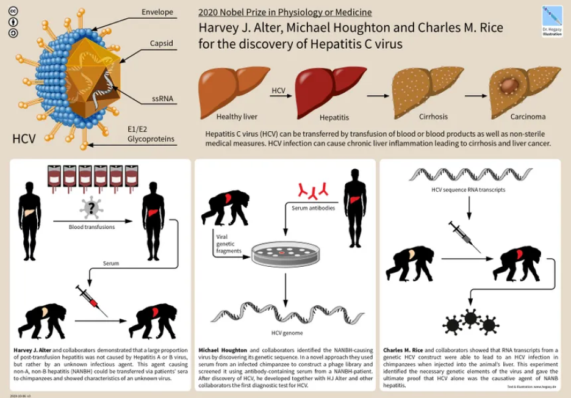
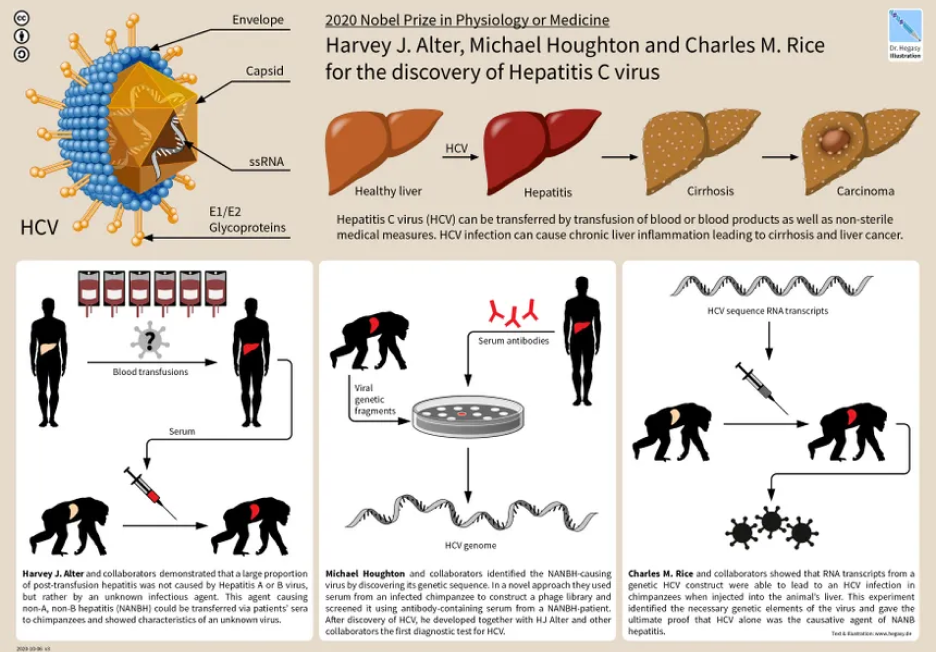

Hepatitis B and Hepatitis C

Hepatitis is caused by a virus in the blood. Like other viruses, a
person becomes infected with hepatitis through exposure to the
virus. Hepatitis B and C cause inflammation of the liver.
Hepatitis B is preventable via a vaccine, but there is no vaccine
for hepatitis C
Causes and Symptoms
causes: Hepatitis is caused by a virus in the blood. Like other viruses, a person becomes infected with hepatitis through exposure to the virus. Hepatitis B and C cause inflammation of the liver. Hepatitis B is preventable via a vaccine, but ther e is no vaccine for hepatitis C
- symptopms:A buildup of fluid within the abdominal cavity (ascites)
- Confusion and tremors (encephalopathy), which are complications due to the inability of the liver to filter out toxins that are normally cleaned out by a healthy liver
- Vomiting of blood, or blood within the stool (variceal bleeding). This is a complication in which enlarg ed veins within the esophagus or stomach bleed as a consequence of increased pressure around the diseased liver.